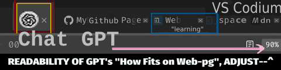

This intial description is of (the core basic) 'work out' and includes where to start Your productivity i.e. adopting certain typical ways to 'Work It Out'.
There are many considerations in the workflow. In certain scenarios, there might become unavoidable, at creative stage of pages to contain images, i.e. right after image processing preparations are done. This is one of them--it is the actual Copying of Files to Project's dir [*The app You've used to edit an img-file, it has the img-file stored in a Directory/Folder, someplace (or from online You'd Dwnld&Save it as 'local saved file') ]. So a straightforward way is to 'Move It' from locally stored w/command applied in terminal. There is a command (available in unix/Linux): mv to-a-folder's[dir-path]. In Linux, that command moves & renames that img-file (both at-the-same-time).
And, using mv command is practical in such ToDo's that are completely outside of the Web Browser environment. Why might that be necessary?
Perhaps an organisation issued a guideline and by design your team is not allowed to reveal business secrets before they're inaugurated in a 'Grand Opening' (their new system and/or service, a deployment of Business Web-Pgs, eg. an on line shop). So let's imagine a development scenario where the guideline is set and You are obliged to follow official advise about how to do it. You must comply as advised, in that you're not allowed to store img-files in any external storage facility (i.e. Cloud services).
Below is a picture of Browser's Window-Header-Section designated to contain 'Your Tabs Opened' (restore option on another day's session--this opt is in many web-browsers by default).
Figure: Tabs commonly shown in Web-browser Tab1 | Tab2 | Tab3 etc."[NB> considerations of a Move-command applied in terminal (bash or other) instead of GUI [i.e. app of FolderFiles], there is Linux command: mv to-a-folder's[dir-path] in Linux, that moves & renames (at-the-same-time) the img-file. And, using this command is practical for such ToDo's outside the Web Browser environment as it simplifies the work flow (use of Linux is gaining poularity, but this is somewhat 'geeky stuff' to learn)!
Back to Portfolio